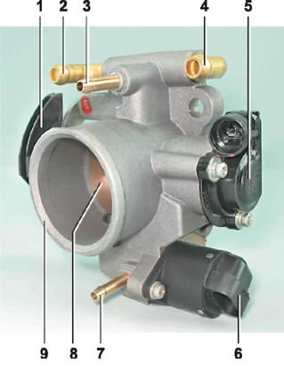
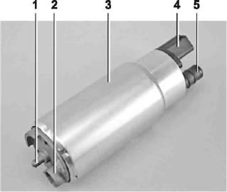
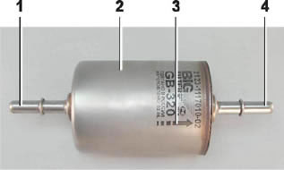
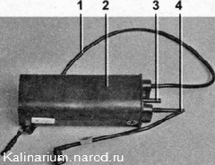
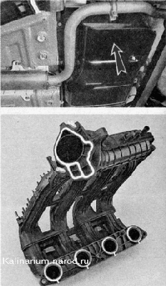
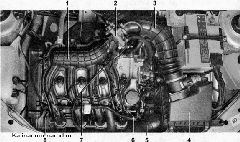
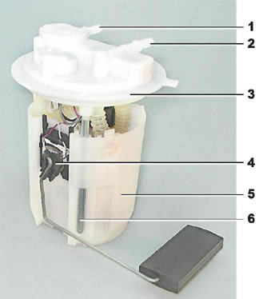
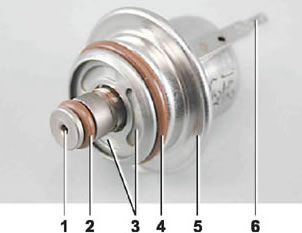
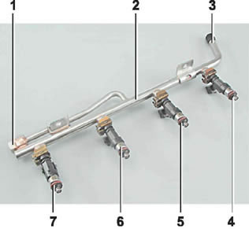

Система питанияОсновные данные для контроля, регулировки и обслуживания
Моменты затяжки резьбовых соединений
ОПИСАНИЕ КОНСТРУКЦИИ  Дроссельный узел: 1 — сектор привода дроссельной заслонки; 2, 4 — штуцеры для соединения с системой охлаждения двигателя; 3 — штуцер подвода картерных газов; 5 — датчик положения дроссельной заслонки; б регулятор холостого хода; 7 — штуцер для соединения с адсорбером; 8 — дроссельная заслонка; 9 — патрубок корпуса дроссельной заслонки Система питания состоит из топливного бака, топливного модуля, топливного фильтра, топливной рампы с форсунками, воздушного фильтра, топливопроводов, воздуховодов, дроссельного узла, впускного модуля, а также системы улавливания паров бензина. Воздух, поступающий в цилиндры двигателя, очищается от пыли воздушным фильтром. Воздушный фильтр установлен в моторном отсеке на трех резиновых опорах. Фильтрующий элемент фильтра — сменный, выполнен из специальной бумаги. Чтобы исключить подсос загрязненного воздуха во впускной тракт, вверху элемента имеется уплотнительная окантовка. Для замены фильтрующего элемента, крышка фильтра выполнена съемной. Очищенный воздух через датчик массового расхода воздуха по воздуховоду проходит к дроссельной заслонке. Дроссельная заслонка регулирует количество воздуха, поступающего в цилиндры двигателя. Привод заслонки от педали «газа» — тросовый. Заслонка вращается на оси в корпусе (патрубке). Корпус дроссельной заслонки закреплен на фланце впускного модуля на шпильках. В корпусе выполнен канал для охлаждающей жидкости. Резиновыми шлангами канал связан с системой охлаждения. Циркуляция охлаждающей жидкости через корпус дроссельной заслонки предотвращает обмерзание внутренних воздушных полостей корпуса зимой. В корпусе установлены штуцеры для соединения с адсорбером и системой вентиляции картера двигателя. Корпус дроссельной заслонки с установленными на него датчиком положения дроссельной заслонки и регулятором холостого хода, образуют дроссельный узел. Запас топлива хранится в баке емкостью 50 л. Топливный бак — стальной, сварен из двух штампованных частей. Бак подвешен к днищу автомобиля на двух стальных хомутах. Заливная горловина топливного бака выведена на правый борт автомобиля и закрыта пробкой. Топливо из бака подается электрическим топливным насосом погружного типа. Насос установлен в топливный бак. Для доступа к насосу в днище автомобиля под подушками заднего сиденья выполнен люк с крышкой. На входном патрубке топливного насоса установлен сетчатый фильтр, задерживающий небольшие твердые частички мусора, попавшие в топливный бак вместе с бензином. Па насос подается напряжение по команде ЭБУ при включении зажигания. Если при этом не будет сделана попытка запуска двигателя, то через 2—3 с ЭБУ выключит топливный насос. От насоса по гофрированной трубке топливного модуля (см. ниже) бензин поступает в топливопровод и далее в топливный фильтр, где топливо подвергается более тщательной очистке.  Топливный насос: 1 — выступ для крепления сетчатого фильтра; 2 - топливозаборный патрубок для подсоединения сетчатого фильтра; 3 — корпус; 4 — колодка электрического разъема; 5 — выходной (нагнетающий) патрубок для соединения с крышкой топливного модуля гофрированной трубкой Топливный фильтр — бумажный, установлен в металлическом неразборном корпусе. Топливный фильтр: 1 — входной патрубок; 2 — корпус; 3 — стрелка направления потока топлива (нарисована краской на корпусе фильтра); 4 — выходной патрубок Очищенное топливо поступает по топливопроводу в топливную рампу. Топливная рампа удерживает четыре форсунки и подводит к ним топливо. Соединение рампы с форсунками уплотнено резиновыми кольцами. Рампа закреплена на головке блока цилиндров болтами. Регулятор давления топлива — перепускной клапан, который поддерживает в системе (топливопровод) рабочее давление 378—390 кПа, необходимое для правильной работы системы впрыска.  Адсорбер: 1 — трубка соединения адсорбера с сепаратором; 2 корпус адсорбера; 3 — патрубок для связи внутренней полости адсорбера с атмосферой; 4 — трубка для соединения адсорбера с клапаном продувки адсорбера В соответствии с действующими экологическими требованиями, автомобиль оборудован системой улавливания паров топлива, надтопливное пространство бака связано с атмосферой не напрямую, а через элементы этой системы. Система состоит из сепаратора, адсорбера, клапана продувки адсорбера, соединительных трубок и шлангов. Сепаратор закреплен под левым задним крылом автомобиля. В сепараторе пары бензина частично конденсируются и через заливную трубу возвращаются обратно в топливный бак. Из сепаратора несконденсировавшие пары бензина по трубкам и соединительным шлангам поступают в адсорбер, который не дает парам попасть в атмосферу. Адсорбер — это емкость, где пары бензина поглощаются активированным углем. При работе двигателя с высокой частотой вращения коленчатого вала ЭБУ подает сигнал на открытие клапана продувки адсорбера, и пары бензина всасываются в ресивер впускного модуля. Адсорбер закреплен на топливном баке слева и закрыт защитным экраном. 
Впускной модуль  Расположение элементов системы питания двигателя в моторном отсеке: 1 — впускной модуль; 2 — дроссельный узел; 3 — шланг подвода воздуха к дроссельной заслонке; 4 — воздушный фильтр; 5 — воздухозаборник; 6 — топливная рампа; 7 — трос привода дроссельной заслонки; 8 — диагностический штуцер топливной рампы Схема системы питания двигателя: 1 — дроссельный узел; 2 — клапан продувки адсорбера; 3 — топливный фильтр; 4 — сепаратор; 5 — заливная труба; б — адсорбер; 7 — форсунки; 8 — диагностический штуцер топливной рампы; 9 — топливная рампа; 10 — топливный бак; 11 — топливный модуль Воздух к впускным клапанам цилиндров двигателя подводится через впускной модуль. Впускной модуль двигателя выполнен из специальной пластмассы и представляет собой неразборный элемент. Топливный модуль двигателя: 1 - входной патрубок (для подвода топлива к регулятору давления); 2 - выходной (нагнетающий) патрубок; 3 - крышка модуля; 4 - датчик указателя уровня топлива; 5 - заборная камера; 6 - направляющая крышки модуля Пробка заливной горловины имеет два клапана: один для аварийного сброса давления паров топлива из бака (что возможно при повышении температуры окружающего воздуха), а другой — для поступления воздуха из атмосферы при расходовании топлива из бака (это исключает возникновение сильногоразрежения в баке). Топливный насос объединен с датчиком указателя уровня топлива и регулятором давления топлива в единый узел — топливный модуль (часто называемый — электробензонасос). Регулятор давления топлива двигателя: 1 — отверстие для сброса избыточного топлива; 2, 4 - уплотнительные кольца; 3 — отверстия для подвода топлива в регулятор; 5 — корпус; 6 — вывод для соединения регулятора с «массой» Топливо из насоса (через выходной патрубок топливного модуля) поступаетвтопливный фильтр. Очищенный бензин вновь по топливопроводу и через тройник подводится к входному патрубку топливного модуля и далее подается в топливную рампу. Избыточное количество топлива стравливается через регулятор давления в бак. Регулятор давления топлива установлен в крышке топливного модуля. Топливная рампа двигателя в сборе с форсунками: 1 - диагностический штуцер (для проверки рабочего давления, закрыт резьбовым колпачком); 2 топливная рампа; 3 - штуцер для соединения с топливопроводом; 4, 5, 6 и 7 форсунки |
||||||||||||||||||||||||||||||||||||